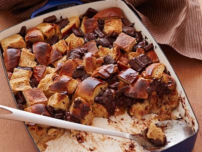

Chocolate Bread Pudding

Ingredients
- 2 large whole eggs
- 3 egg yolks
- 3/4 cup sugar
- 1/2 cup hot chocolate mix
- 3 cups half-and-half
- 1 cup whole milk
- 2 ounces espresso, slightly cooled
- 1 tablespoon vanilla extract
- 2 tablespoons unsalted butter, melted and divided
- 18 ounces stale challah bread, cut into 1-inch cubes
- 6 ounces bittersweet chocolate, broken into 1/2-inch pieces
Directions
- Place the eggs and yolks in the carafe of a blender and combine on the lowest speed for 30 seconds. Slowly add the sugar over 30 seconds, and then add the hot chocolate mix and blend until incorporated, about 30 seconds. Add the half-and-half, milk, espresso and vanilla and blend until well combined, about 30 seconds.
- Butter a 9 by 13-inch metal pan with 1 tablespoon of the butter and place the cubed bread in the pan. Spread the chocolate on top of the bread and slowly pour in the custard. Press down on the mixture with a spatula or the back of a spoon to thoroughly saturate. Cover and set aside at room temperature for 2 hours, or refrigerate for up to 8 hours.
- Preheat the oven to 325 degrees F.
- Bake until the internal temperature reaches at least 170 degrees F, about 45 minutes. Set the oven to the high broil setting with the oven door ajar. Remove the bread pudding from the oven. Pour the remaining melted butter into a spray bottle and spritz the top of the bread pudding. Return to the middle rack and broil for 4 to 5 minutes. Remove to a cooling rack for 15 minutes before serving.